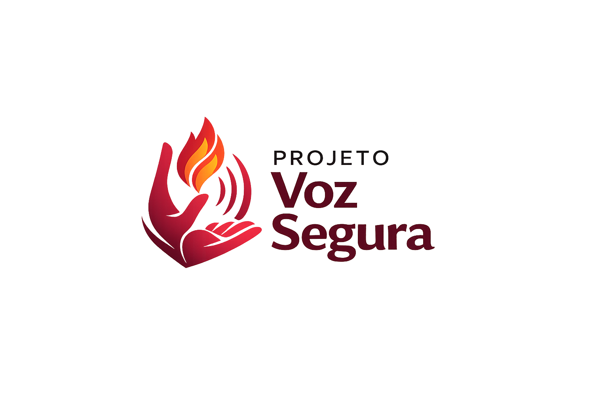

AJUDAInformação, acolhimento e orientação para mulheres em situação de violência.
Procure ajudaO Voz Segura é um projeto que busca conscientizar sobre a violência contra a mulher, divulgar informações sobre direitos, incentivar denúncias e apresentar os principais canais oficiais de apoio às vítimas.
Agressões que causam dor, lesões ou qualquer dano ao corpo.
Humilhações, ameaças, chantagens e manipulações emocionais.
Calúnia, difamação e qualquer atitude que afete a honra da vítima.
Destruição, retenção ou controle dos bens e documentos da vítima.